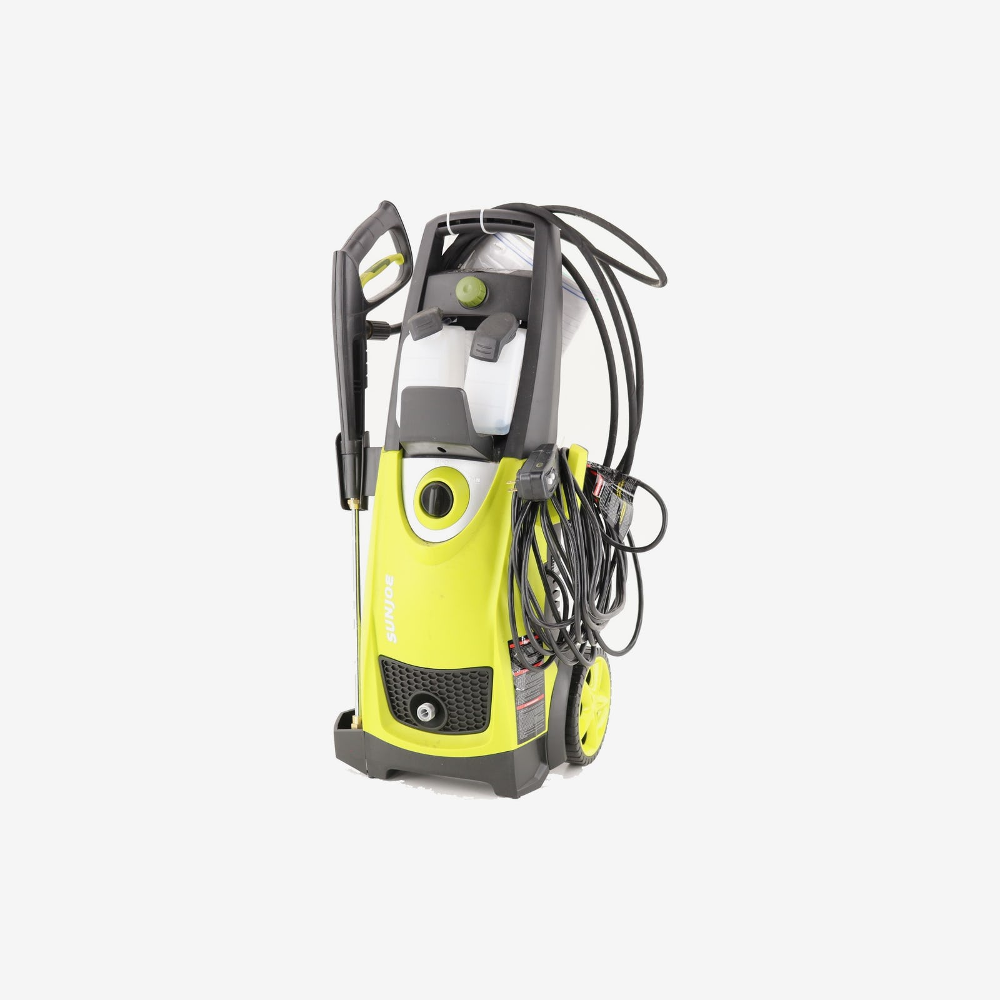

Pressure washer 101.
Duration: 1hr
Rent this pressure washer for $25/day
As winter breaks, it's time for some spring cleaning. A pressure washer is a great way to accomplish many cleaning tasks with efficiency and speed. However, knowing proper use and safety is key to accomplishing your tasks without damaging your home or harming someone. With proper knowledge, you can select the right pressure washer for the job as well as decide whether it makes sense to purchase or rent. Common around the home uses include cleaning: concrete walks, driveways, brick, siding, boats and vehicles.
Prep
Setting up a pressure washer can vary from machine to machine. However, this process is simple if you follow these basic steps. Start by familiarizing yourself with pressure washer. Many will have a simple step-by-step guidance on the handle. Next, assemble the parts. You will need the pressure washer, high-pressure hose, spray gun, tips and a garden hose. Before starting, check the oil and gas for proper levels.
Action
With proper technique, you can clean most brick and concrete surfaces fairly quickly.
Starting at one end of the hardscape, hold the tip about 12" from the surface and use an even and consistent sweeping motion.
This will help prevent damage to the surface as well as minimize streaking. Keep the spray at a slight angle to direct the cleaning across the surface of the brick or concrete and prevent the force from degrading the surface. As you move across the area, try to direct the run off to a pervious area. Finish by using a push broom or wide spray tip to remove the loosened debris from the surface.
If you have a large area to clean, consider renting a rotating sweeping attachment. This attachment has a rotating head that can consistently clean large areas quickly without causing arm fatigue.
Finish
If possible, store the power washer indoors in the off-season to avoid damage to the pump, hoses and spray wand. Otherwise, winterize them using only antifreeze designed for recreational vehicles (RVs); see Photo 6. When a gas-powered washer won’t be used for a month or more, prevent damage to the engine by draining the system of gas or adding a gas preservative to the fuel tank.
Extra
Keep in mind that pressure washing removes dirt and grime, but it isn’t designed to strip paint or kill mildew on siding or decks. For the best cleaning results without damaging any surfaces, first, test the pressure setting and spray pattern on an inconspicuous place.